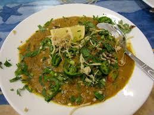

Haleem

Haleem is a hearty dish made from wheat, lentils, and meat cooked together into a thick porridge-like consistency.
Its roots go back to the Middle East and Central Asia, but it became deeply popular in the subcontinent during the Mughal era.
In Pakistan, haleem is prepared with a blend of slow-cooked spices and garnished with fried onions, green chilies, ginger, lemon, and coriander.
It is often eaten during Muharram, Ramadan, and family gatherings, representing both nourishment and tradition.
Ingredients (serves ~6)
- Meat (beef or mutton): 500 g, boneless
- Wheat grains: 1 cup (soaked overnight)
- Mixed lentils: 1 cup (chana, masoor, moong, urad)
- Onions: 2 large, sliced
- Oil or ghee: 1/2 cup
- Haleem masala: 3–4 tbsp
- Ginger-garlic paste: 2 tbsp
- Salt: to taste
- Garnish: fried onions, lemon wedges, ginger, green chilies, fresh coriander
How To Make
- Boil wheat and lentils separately until soft, then blend or mash to smooth paste.
- Cook meat with onions, ginger-garlic, haleem masala, and salt until tender. Shred meat finely.
- Combine wheat-lentil paste with meat mixture; mix well. Add water to adjust consistency
- Cook on low flame 30–40 min, stirring often to prevent sticking.
- Serve hot with fried onions, lemon, ginger, chilies, and coriander.
Home